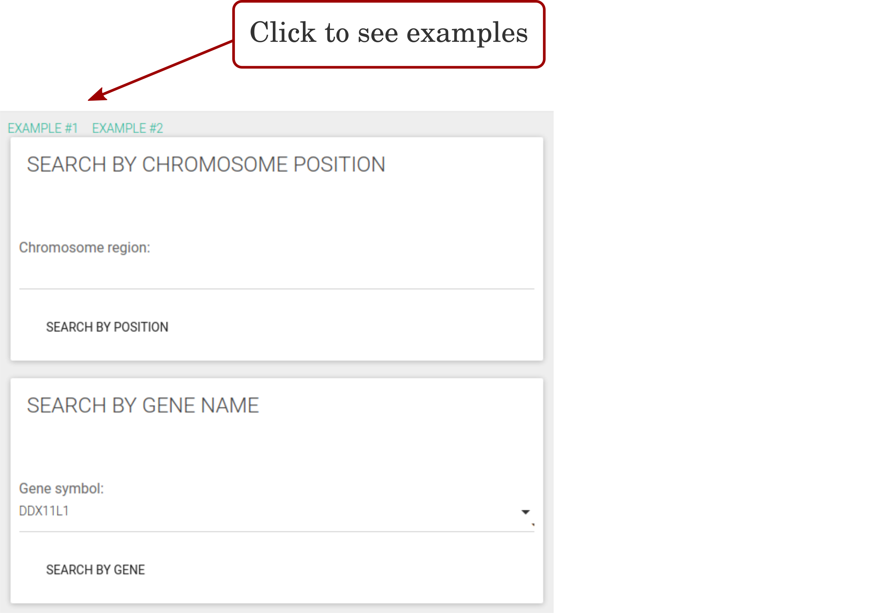
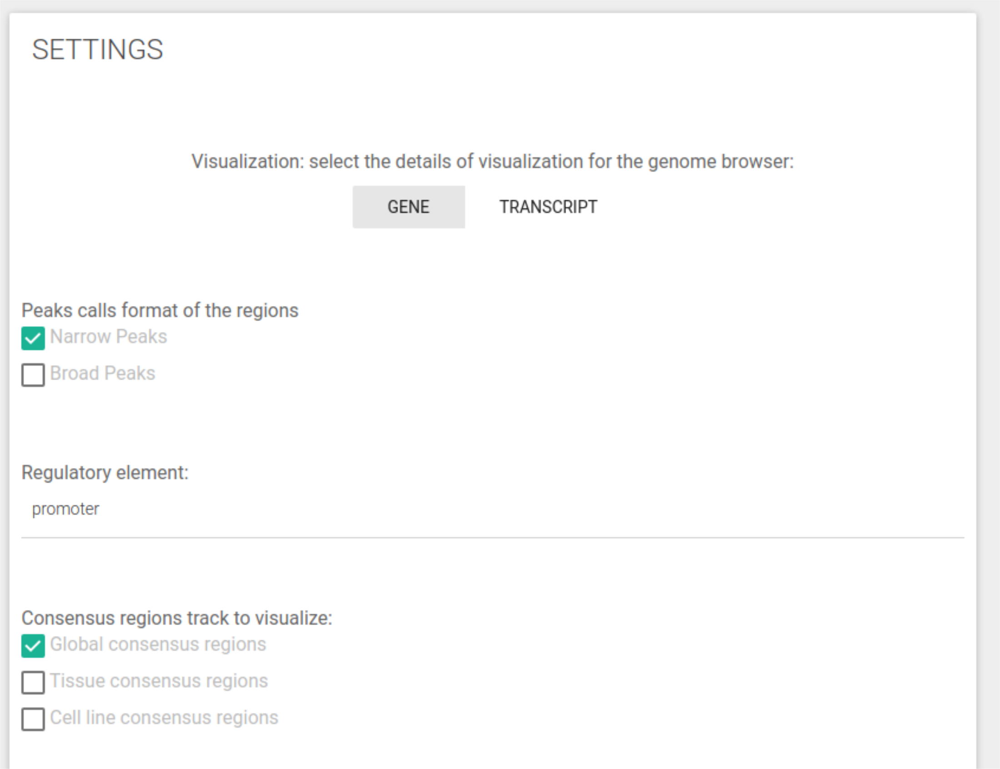
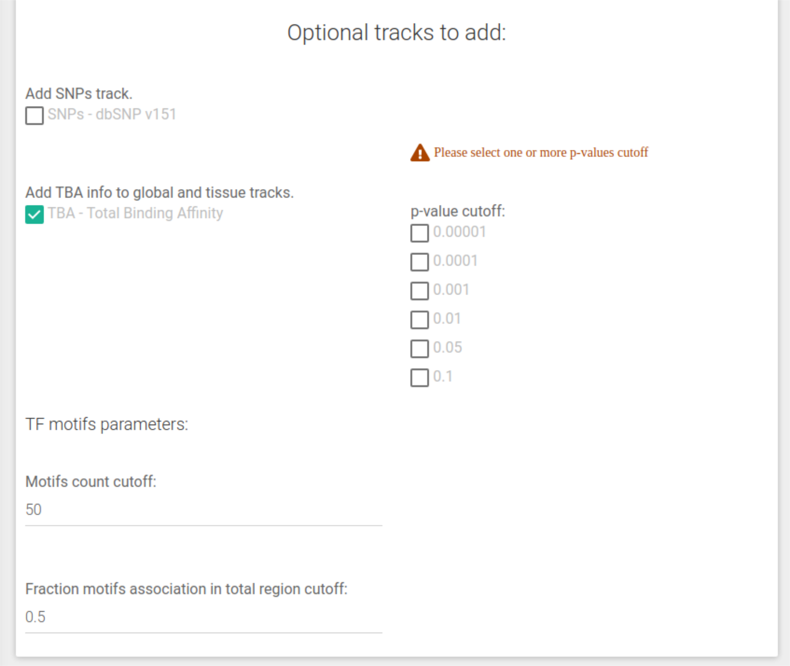
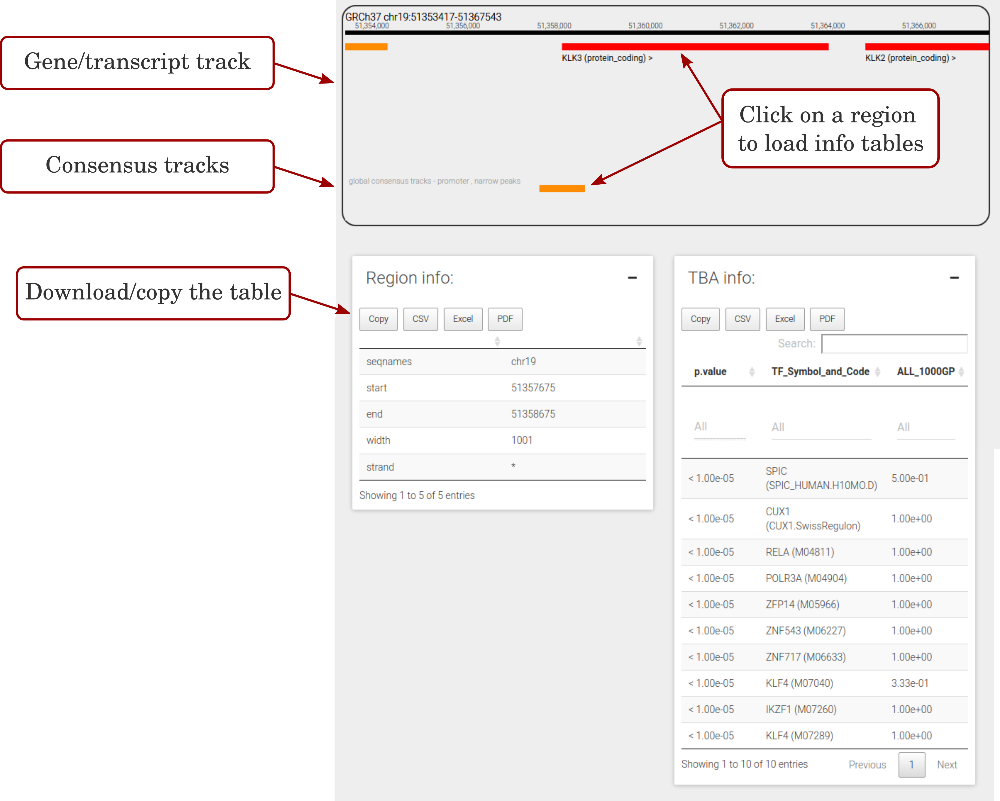

The help contains all the information about how to use CONREL's website.
To specify your desired inputs you have to use the input form at the CONREL search page.
You can search CONREL by using chromosome coordinates or by gene name.
The accepted format for the genome coordinates is chrN:startPosition-endPosition (e.g. chr11:1297556-1349042 or chr4:11,524,330-11,787,112).
The gene can be selected from a list or typing the name inside the relative input field (an autocompletion mechanism will filter the results to help you).

In the settings page you can change the parameters that influence the output. You can choose which tracks you want to visualize and add optional tracks.
NOTE that some parameters are required and some are optional.
Under Visualization you can select the level of details for the genome browser. You can choose between:
Under peaks call format you can select the consensus regulatory elements generated using the Narrow peaks dataset and/or the Broad peaks dataset as defined by the ENCODE consortium.
In Consensus regulatory element setting you can select which type of CRE (among: promoter, enhancer and active enhancer) you want to visualize
The Consensus region tracks setting permits you to visualize the consensus regolatory elements at different level of abstraction. You can choose between:
NOTE that the lists of tissues and the tree of cell-lines are built based on the peak format selected. A different list of tissues and cell lines was available for Narrow and Broad peaks format. Then, selecting Narrow peak, Broad peak or both will provide a different list of tissue and cell line consensus regions. Thus, changing the peak format it will reset both tissue and cell line selections.

The SNP track displays all the single-nucleotide variants with a MAF greater or equal to 0.01 from dbSNP v151
The TBA information display the Total Binding Affinity of a regulatory region for a specific TF.
NOTE that the TBA is available only for global and tissue consensus regions.
The Motifs count cutoff puts a threshold on the number of aligned sequences used to built a TF motif. This is an option to limit the number of TF motifs in your output.
A motif is usually derived from a set of aligned sequences. Lower count means lower sequences that supports a specific motif. This option excludes all the motifs with count (sequences aligned) below than threshold.
The Fraction motifs cutoff puts a threshold on the fraction of regions with a significant TBA score for a specific motif. This is an option to limit the number of TF motifs in your output.
This option excludes all the motifs that are enriched in TBA score in more regions (expressed as fraction over all the regions of the corresponding consensus) than the threshold provided.

Due to computational restriction, the genome browser will be loaded within a window of ±1Mb before and after the chromosome coordinates or the gene selected.
The genome browser window can be navigated. Clicking on a region/variant/gene/trascript gives several informations about it into table format that can be copied or downloaded using different file formats.
